| 1 |
Campo de juego |
El campo de juego de voleibol consiste en un rectángulo de 18 metros por 9 metros, rodeado de una zona libre que debe medir, como mínimo, 3 metros de ancho en cada uno de sus lados. Al conjunto de estas dos zonas se lo conoce como «área de juego». |
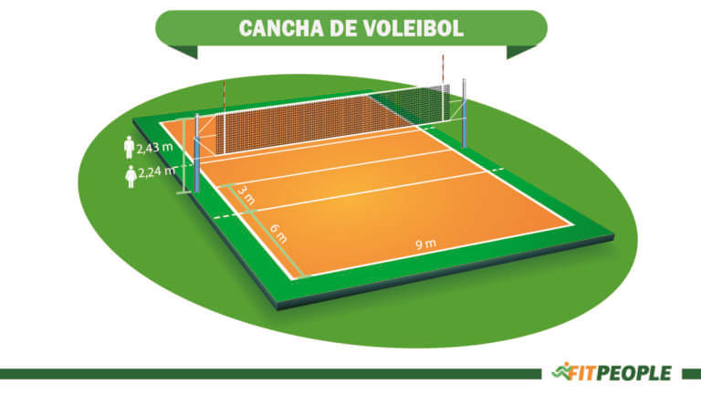 |
| 2 |
Balón |
Según las reglas oficiales del voleibol, este tiene que ser esférico, confeccionado en cuero sintético y flexible. La circunferencia puede medir entre 65 y 67 centímetros, mientras que el peso deberá oscilar entre 260 y 280 gramos. |
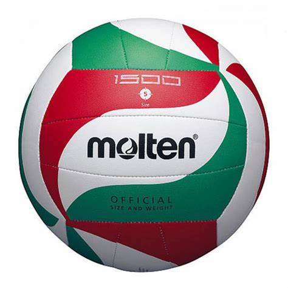 |
| 3 |
Equipos |
Cada equipo se compone de un máximo de 12 personas, además de un staff que incluye al entrenador y a los médicos.
Dentro de esas 12 personas, 6 jugadores son titulares y 6 jugadores son suplentes. De los 6 jugadores titulares, tres forman la línea delantera, mientras que los otros tres se posicionan detrás, actuando como defensores o zagueros. Además, todos los equipos cuentan con un capitán.
|
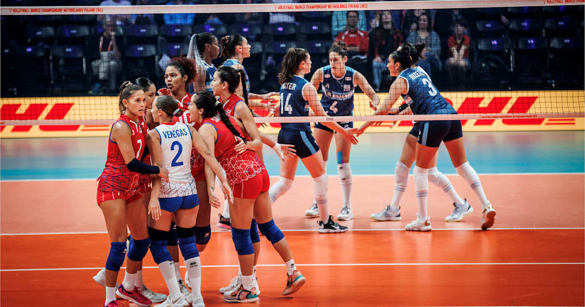 |
| 4 |
Indumentaria |
Según el Reglamento Oficial del Voleibol, la indumentaria consiste en un pantalón corto, camiseta, calcetines y calzado deportivo cómodo. El color de la ropa representa al equipo, por lo que la vestimenta debe ser uniforme en todos los participantes. El único miembro del equipo que vestirá un uniforme distinto a los demás es el líbero. |
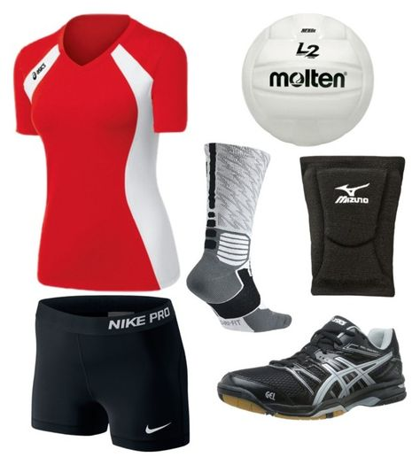 |
| 5 |
Rotaciones |
La rotación se establece de acuerdo con la formación inicial de cada equipo y es controlada por medio del orden de saque, así como por las posiciones de los voleibolistas durante el set. Por tanto, cuando un equipo receptor obtiene el derecho a sacar, las reglas oficiales del voleibol prevén que los jugadores roten sus posiciones en el sentido de las agujas del reloj. |
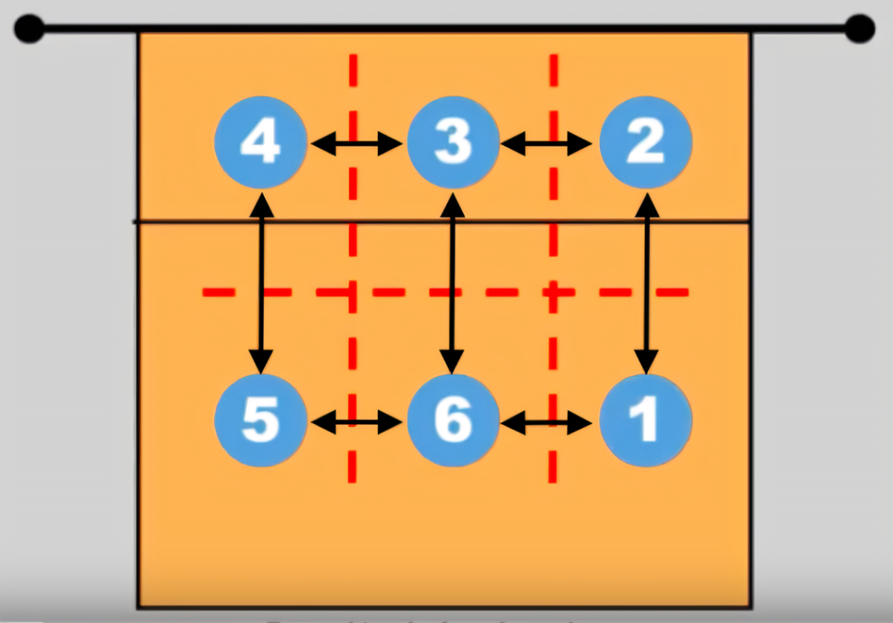 |
| 6 |
Puntos |
El sistema de puntos del balonvolea está mediado por las situaciones que te enlistamos a continuación:
El balón toca de forma exitosa el suelo del campo de juego rival.
El equipo rival comete una falta.
El equipo rival recibe un castigo.
|
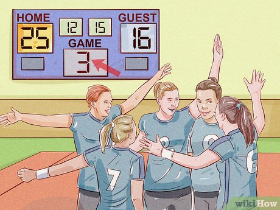 |
| 7 |
Sets |
Un partido de vóley puede desarrollarse en 3 o 5 sets. Para ganar un set, el equipo debe marcar 25 puntos con una distancia mínima de dos puntos frente al equipo adversario. |
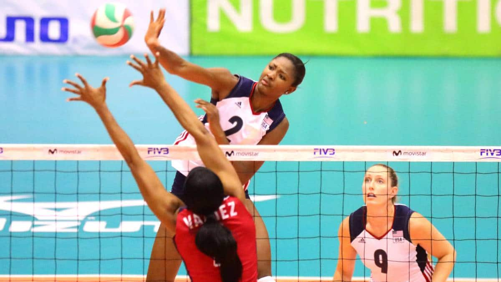 |
| 8 |
Duración del partido |
Dadas las particularidades que tienen las reglas del voleibol, a diferencia de otros deportes, establecer un tiempo de juego determinado es bastante díficil, porque todo dependerá de cómo se desarrolle el partido. En principio, un encuentro puede disputarse a 3 o a 5 sets, por lo que variará según el caso. Además, cada equipo puede solicitar hasta dos tiempos de descanso en cada set.
En líneas generales, podríamos decir que un partido de vóley puede durar entre una hora y dos horas y media, aunque hay casos de partidos mucho más largos y también mucho más cortos. |
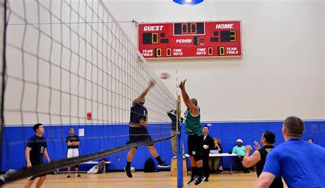 |
| 9 |
Saque |
Un sorteo define qué equipo comenzará el juego por medio del saque inicial. Como tal, el saque constituye la puesta en juego del balón por parte de un equipo, y el encargado de hacerlo es el zaguero derecho, quien se ubica en la zona de saque.
Para que el saque sea correcto, se debe lanzar al aire el balón y golpearlo con una mano o cualquier parte del brazo. Si el zaguero deja caer el balón sin tocarlo, se considera tentativa de saque, y debe repetirlo en los siguientes tres segundos. |
|
| 10 |
Recepción |
Cuando el balón pasa por encima de la red y llega al campo del equipo rival, este equipo debe interceptarlo y controlarlo. Esto se suele hacer con un golpe muy preciso que implica tener los hombros abajo, una mano encima de la otra y los pulgares juntos. |
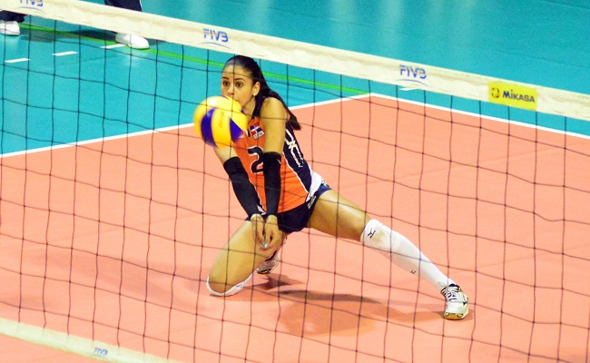 |
| 11 |
Toques al balón |
Según las reglas del voleibol, el equipo tiene un total de tres toques posibles antes de pasar el balón al campo contrario. Luego de esos toques, pueden darse varias situaciones:
El balón atraviesa el campo por encima de la red de forma exitosa y el equipo contrincante debe devolverlo.
El balón cae al suelo en el pavimento del campo propio.
El balón se va fuera del campo de juego.
|
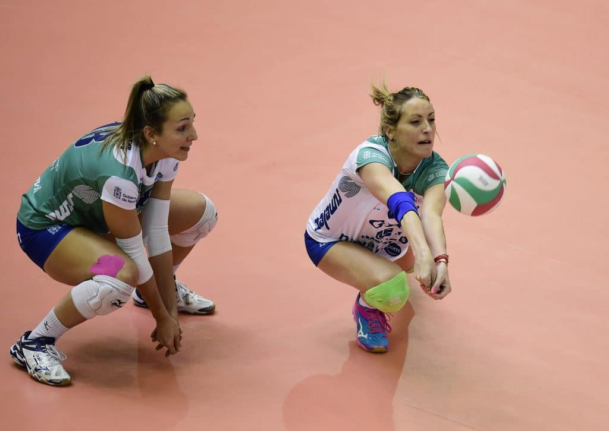 |
| 12 |
Bloqueos |
El bloqueo es una acción que se ejecuta para bloquear el ataque del equipo adversario. Para realizarlo, es necesario dar un salto vertical ―se pueden usar los brazos como péndulo para maximizar la potencia― y llevar las manos a la parte superior de la red. |
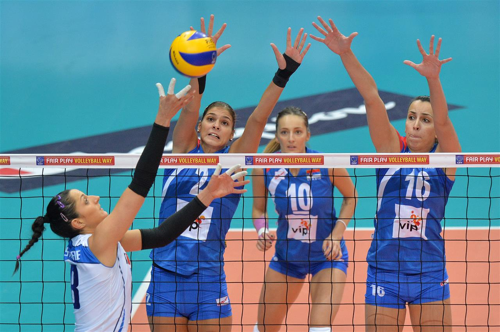 |
| 13 |
Faltas |
Las faltas se contabilizan cuando el jugador realiza alguna acción contraria al reglamento. Las faltas se dividen según su categoría, y son las siguientes:
Faltas de posición: son las que se relacionan con las posiciones de los jugadores en el campo en el momento preciso de ciertas acciones. Por ejemplo, cuando un jugador está fuera de posición durante el momento del saque.
Faltas en la red: la red no puede tocarse ni tampoco se debe cruzar la línea central.
Faltas de rotación: la rotación tiene que seguir el sentido de las agujas del reloj. Si esto no ocurre, podría conllevar una sanción. De igual manera, es una falta que el saque no se haga siguiendo el orden de rotación.
Faltas en el servicio: algunas faltas de este tipo incluyen cruzar la línea de servicio antes de tocar el balón, golpear la pelota tras 8 segundos posteriores al silbato del primer árbitro y que otro jugador del mismo equipo toque el balón antes de cruzar la red.
Faltas en el juego de balón: si un equipo realiza cuatro toques, cometerá una falta, así como si un miembro del equipo toca el balón 2 veces consecutivas. Además, no debe existir ningún tipo de ayuda al momento de atacar el balón, tales como empujones, impulsos, apoyos o similares.
Faltas de bloqueo: durante el bloqueo, es importante no tocar la red ni tocar el balón antes de que el jugador contrario lo golpee. Por otro lado, cabe indicar que le bloqueo no es considerado un golpe.
Faltas de golpe de ataque: no se puede golpear la pelota fuera de los límites del campo de juego.
|
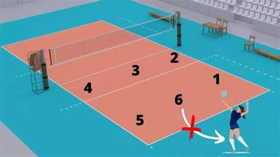 |
| 14 |
Árbitros |
Los encargados de velar por el cumplimiento de las reglas del voleibol y de juzgar las faltas son los árbitros. Estos son los siguientes:
Primer árbitro: tiene las decisiones finales y es quien dirige el encuentro desde el principio hasta el final. Se encuentra de pie en una plataforma, en uno de extremos de la red.
Segundo árbitro: está fuera de la cancha y es el asistente del primer árbitro. Además, controla el trabajo de los anotadores.
Anotador: el anotador es quien registra los puntos y las amonestaciones.
Anotador asistente: asiste al anotador en algunas tareas administrativas.
Dos o tres jueces de línea: controlan las líneas y señalan dónde caen los balones.
|
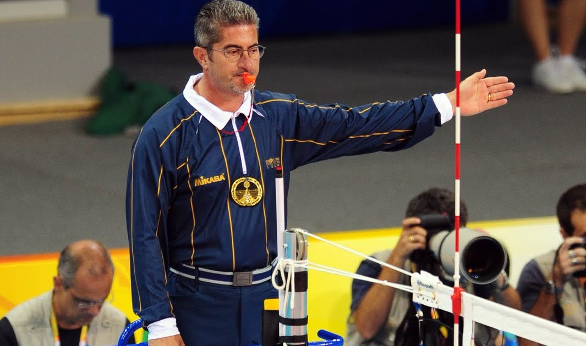 |
| 15 |
Sanciones |
Los jugadores se comprometen a conocer las reglas del vóleibol y a cumplirlas, de lo contrario, pueden exponerse a las sanciones que determinen los árbitros. Las reglas oficiales establecen una escala de sanciones según la gravedad de la falta. Dicha escala se divide en los siguientes rangos:
Castigo: consiste en una sanción de un punto y otorgarle el saque al equipo adversario. Se da cuando hay una conducta grosera por parte de un miembro.
Expulsión: en este caso, el jugador sancionado no podrá participar en el resto del set. Ocurre cuando un miembro del equipo tiene alguna palabra o un gesto difamatorio o insultante.
Descalificación: ante un ataque físico (o un intento), se sanciona al miembro del equipo con la descalificación directa. Cabe destacar que ningún equipo puede jugar con inferioridad numérica, por lo que el equipo perderá el set si queda incompleto.
|
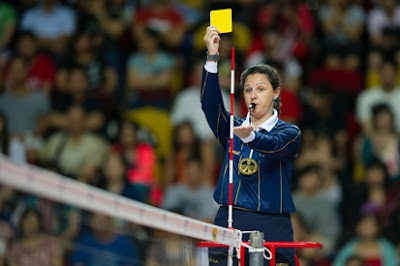 |